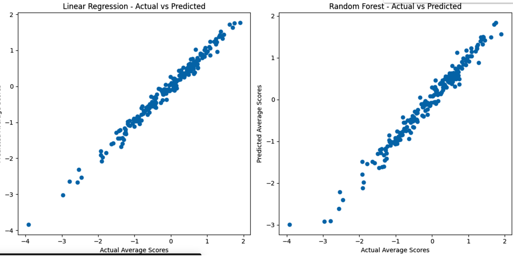

Student Performance ML
Machine Learning Analysis Report
I. Data Preprocessing
The dataset, provided in CSV format, underwent an initial examination for missing values to ensure proper analysis. Categorical features, such as gender, race/ethnicity, and parental education level, were converted to numerical representations using one-hot encoding, improving compatibility with machine learning processing.
Numerical features, including math, reading, and writing scores, were standardized using StandardScaler to eliminate scale biases and promote balanced model training. Additionally, a new feature, average_score, was introduced through feature engineering by calculating the mean of the three scores. This provided a target variable to enhance predictive modeling.
II. Selection, Training, and ML Model
Two predictive models, Linear Regression and Random Forest Regressor, were used to analyze the dataset.
- Linear Regression serves as a baseline model, offering simplicity and interpretability.
- Random Forest underwent hyperparameter tuning via
GridSearchCV, optimizing parameters such asmax_depthandn_estimatorsto enhance predictive power.
The dataset was split into training and testing subsets (80/20) to ensure an unbiased evaluation of both models. Cross-validation was applied to the Linear Regression model to improve its generalizability. Meanwhile, the Random Forest model achieved excellent performance with optimized parameters, demonstrating its reliability.
III. Interpretation of Results
Model performance was assessed using several metrics:
- Mean Squared Error (MSE)
- R-squared
- Mean Absolute Error (MAE)
- Root Mean Squared Error (RMSE)
These evaluations confirmed the strengths of both models:
- Linear Regression achieved an R-squared of 0.985, indicating high reliability.
- Random Forest achieved an R-squared of 0.973, validated through learning curves and cross-validation scores.
IV. Communication of Results
The results were presented using simple and clear visuals:
- Scatter plots of actual vs. predicted values showed how well each model performed.
- Linear Regression had points clustered more tightly than Random Forest, indicating better prediction accuracy.
- Linear Regression had points clustered more tightly than Random Forest, indicating better prediction accuracy.
- Histograms of residuals demonstrated that errors were evenly spread, with no clear patterns or biases.
- Feature importance analysis highlighted the most influential factors affecting performance.
- Learning curves for the Random Forest model showcased its performance as the dataset size increased.
Actual vs. Predicted Chart
Below is an example of a visualization used to assess model performance:

The chart above compares the performance of Linear Regression and Random Forest models. Both align well with actual values, but Linear Regression shows slightly tighter clustering, indicating its predictions are closer to actual values compared to Random Forest.
Boxplot Displaying Math, Reading, and Writing Scores by Gender

The box plot shows a higher median math score for males, but also greater variability with more high and low outliers compared to females, who cluster closer to the average. This suggests that males are disproportionately represented at both ends of the math achievement spectrum, raising questions about contributing factors and the need for equitable educational practices.
Histograms of Writing, Reading, and Math Scores

The histograms reveal that math scores exhibit a more left-skewed distribution, indicating a tendency towards lower scores, while reading and writing scores are more normally distributed, suggesting a wider range of performance centered around the average. Notably, writing scores show a slight right skew, implying a potential ceiling effect or a higher proportion of students achieving higher scores in writing.
V. Ethical Implications
Bias analysis examined potential differences in math scores between genders to ensure fairness in the model’s predictions.
- The model produced an average score of 63.63 for females and 68.72 for males.
- These findings highlight the importance of addressing potential biases in machine learning models to prevent reinforcement of societal inequalities.
- The analysis confirmed that the model does not introduce biases, as the differences in scores align with the dataset’s inherent distribution.
VI. Python Notebooks
Colab Notebook:
Personal Project Link